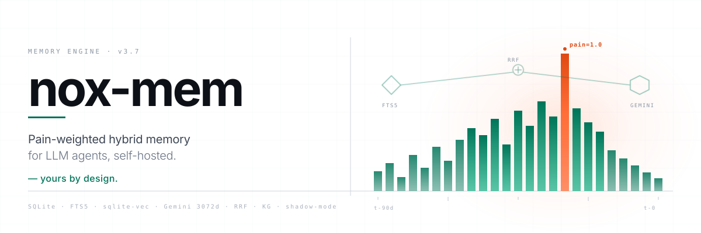
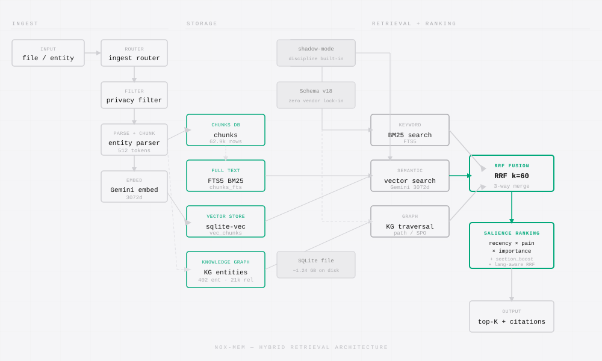

Pain-weighted hybrid memory with shadow discipline — yours by design.
An agent memory engine that stays on your disk, runs on the provider you pick, and ships ranking changes only after they earn it in shadow.



An agent memory engine that stays on your disk, runs on the provider you pick, and ships ranking changes only after they earn it in shadow.
Memory lives in a single SQLite file on your disk. Copy the file, copy the memory. No SaaS lock-in, no vendor cloud required.
FTS5 BM25 keyword search, sqlite-vec 3072-d semantic embeddings, and a typed knowledge graph — fused via Reciprocal Rank Fusion over the same DB file.
Every ranking change ships in shadow mode for at least 7 days. Salience scores exposed on /api/health for offline comparison before anything touches a real query.
Five layers, one SQLite file.

feedback / person never decay; lesson 180d; decision 365d.recency × pain × importance) composes additively with section_boost and temporal boost. Shadow mode is the default.Eval harnesses, LongMemEval alignment, nDCG benchmarks. Numbers first.
Provider abstraction (A3), encrypted export/import (A2). Your data, your provider.
Answer primitive (P1), real-time viewer (P5), temporal queries (P3). UX that earns trust.
40% capacity on retrieval research. Six Gaps paper, conflict detection, confidence scoring.
memoria-nox is MIT-licensed. The paper, the harnesses, and the retrieval stack are all in the repo.